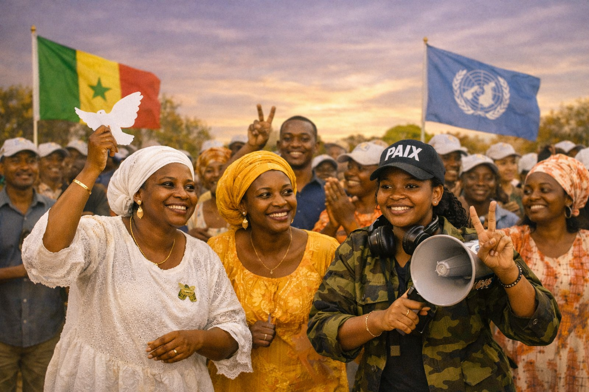

AWLN Sénégal développe et met en œuvre des initiatives pour renforcer le leadership féminin, promouvoir la paix et soutenir l’autonomisation des femmes et des filles.

Formation et mentorat pour encourager la participation des jeunes femmes dans la gouvernance.
Lire plus
Sensibilisation et actions communautaires pour la cohésion sociale et la résolution pacifique des conflits.
Lire plus
Renforcement des capacités économiques des femmes à travers des formations et des projets locaux.
Lire plus